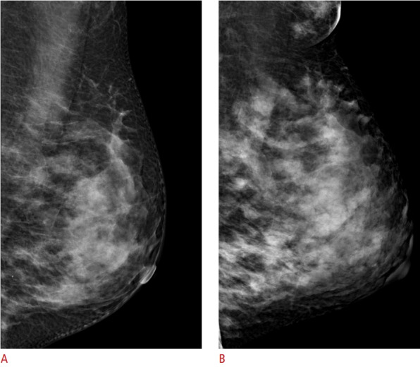
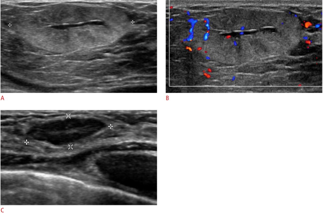
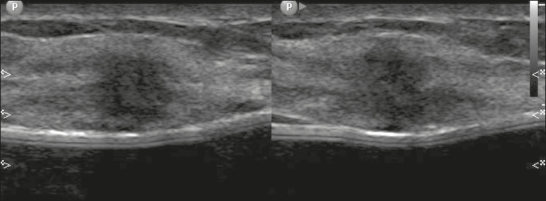
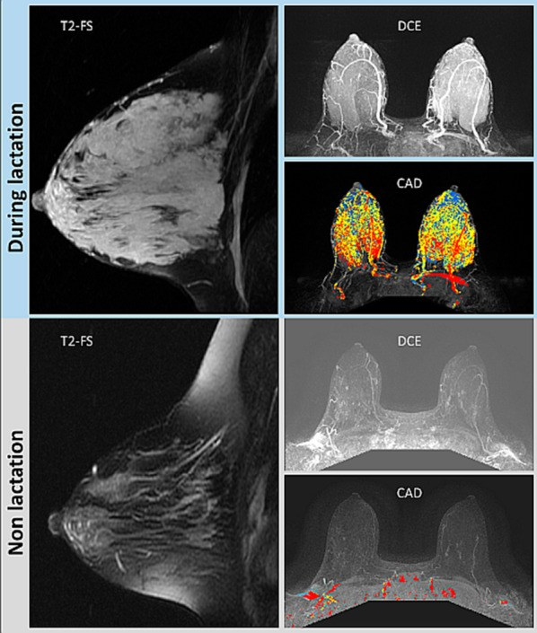
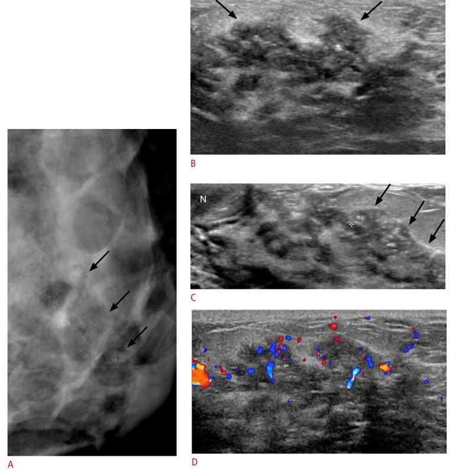
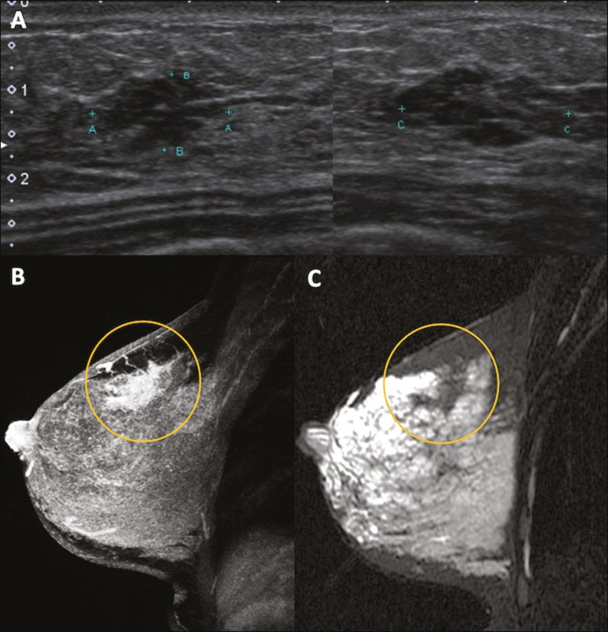

1601 — Ung thư vú trong thai kỳ & cho con bú: protocol hình ảnh, giả u sinh lý và xử trí theo tam cá nguyệt / Breast cancer in pregnancy and lactation
Tags: pattern:u-vu pattern:thai-ky vung:vu score:BI-RADS protocol:sieu-am-vu protocol:nhu-anh protocol:MRI-vu
Mức chắc chắn (certainty): tổng hợp y văn (literature synthesis) — bài review chẩn đoán–điều trị (Front Med 2026, PMC13144061, CC BY), review điều trị theo tam cá nguyệt (OncoTargets Ther 2026, PMC13135752, CC BY-NC), khuyến cáo SMFM Consult Series #76 (Pregnancy 2026, PMC13344446, CC BY-NC), atlas hình ảnh thai kỳ–cho con bú (Ultrasonography 2020, PMC7315302, CC BY-NC; Radiol Bras 2020, PMC7720671, CC BY) và review MRI (Insights Imaging 2022, PMC8994812, CC BY). Số liệu lấy nguyên từ bài gốc; chỗ hai nguồn mâu thuẫn được ghi rõ.
Câu hỏi gốc của bài: phụ nữ đang mang thai hoặc đang cho con bú đến khám vì khối vú sờ thấy — làm gì trước, được phép chụp gì, không được chụp gì, khi nào sinh thiết, và nếu là ung thư thì điều trị theo tam cá nguyệt thế nào để không hại thai? Điểm tựa: vú thai kỳ–cho con bú là vú "đang xây dựng": tuyến tăng sinh, ứ sữa, tăng nước và tăng mạch → vừa che mất ung thư, vừa tạo ra vô số "giả u". Vì vậy nguyên tắc kép: (1) siêu âm trước, không trì hoãn vì thai; (2) mọi khối nghi ngờ đều phải lấy mô — "chờ sau sinh" là sai lầm chết người.
1. Tổng quan bệnh học – cơ chế hình ảnh
A. Định nghĩa và dịch tễ (cửa 1 Argon — con số):
- PABC (pregnancy-associated breast cancer) = ung thư vú chẩn đoán trong thai kỳ hoặc trong vòng 12 tháng sau sinh; BCP (breast cancer during pregnancy) là phần trong thai kỳ. PABC chiếm 0,2–3,8% ung thư vú (PMC13144061, PMC13135752).
- Tần suất: ~1/1.000 thai kỳ (PMC13144061) — nguồn khác ghi 1/10.000–1/3.000 (PMC13135752) → dao động theo định nghĩa và dân số, không có một con số tuyệt đối.
- ~30% là ung thư vú ba âm (TNBC), ~40% đã có di căn hạch nách lúc chẩn đoán; 35% (7/20) có đột biến sinh bệnh (6 ca BRCA1) trong một cohort nhỏ → mọi ca BCP nên được tư vấn xét nghiệm gen (PMC13144061).
B. TẠI SAO hình ảnh khó – ba thay đổi sinh lý và hệ quả trên từng phương thức:
| Thay đổi sinh lý | Hệ quả trên nhũ ảnh | Hệ quả trên siêu âm | Hệ quả trên MRI |
|---|---|---|---|
| Tăng sinh tiểu thùy + tăng nước/mô tuyến | Mật độ tuyến tăng mạnh (ảnh dưới) → che khối, Se nhũ ảnh giảm | Nhu mô giảm hồi âm lan tỏa, khó phân biệt u với tuyến | BPE tăng (grade 3), giả dương trên CAD |
| Giãn ống tuyến + ứ sữa | Vi vôi hóa kiểu tiết sữa (secretory) rải rác, hai bên — lành tính | Nang sữa, galactocele (mức béo–dịch) | Galactocele: mức mỡ–dịch trên T1/T2 |
| Tăng tưới máu + phù nề | Khó đánh giá đối xứng; giả dày da | Tăng tín hiệu Doppler lan tỏa (dễ nhầm "u có mạch") | Ngấm thuốc nền mạnh, che tổn thương nhỏ |

Cùng một bệnh nhân 33 tuổi: (A) nhũ ảnh trước khi mang thai — tuyến mật độ không đồng nhất; (B) trong thời kỳ cho con bú — vú to hơn, mật độ nhu mô tăng rõ, thêm mô tuyến phụ ở nách. Đây là lý do nhũ ảnh một mình không đủ để loại trừ ung thư trong thai kỳ. Nguồn: Lee SE, Bae YK, Ultrasonography 2020 (PMC7315302) Fig. 1, CC BY-NC 4.0.C. Ngưỡng định lượng của từng phương thức (bắt buộc nhớ):
| Phương thức | Giá trị chẩn đoán | Liều/ an toàn | Ghi chú |
|---|---|---|---|
| Siêu âm | Se 86,4%, Sp 96,5% cho PABC (Robbins, dẫn trong PMC13144061) | Không bức xạ | Bước 1 bắt buộc; đánh giá cả hạch nách |
| Nhũ ảnh | Se 78–90% (nhất là với vi vôi hóa) | < 3 mGy cho hai bên; tử cung < 0,03 mGy; thai nhi 0,001–0,01 mGy | Làm được và an toàn; cần khi đã nghi ung thư (tìm ổ thứ hai/đối bên) |
| MRI không cản quang | Chưa đủ bằng chứng cho BCP (PMC13144061) | An toàn | DWI/ADC hữu ích khi siêu âm–nhũ ảnh không kết luận |
| MRI có gadolinium trong THAI | — | Gadolinium qua nhau thai; nguy cơ lý thuyết | Không thường quy (PMC13144061, PMC8994812) — nhưng xem mục 5 (SMFM) |
| MRI có gadolinium SAU SINH/cho bú | BPE grade 3 làm giảm độ nhạy | Gadolinium được coi là an toàn khi cho con bú (PMC8994812) | Vẫn hạn chế vì BPE che tổn thương |
| Xạ hình xương / PET | — | Bức xạ hạt nhân đáng kể | PMC13144061: chống chỉ định; SMFM: không từ chối nếu thật cần (xem mục 5) |
2. Mẫu hình + chẩn đoán phân biệt theo bối cảnh (Gamut)
- Khuôn 1 — Khối đặc, bờ đều, trong 3 tháng cuối hoặc đang cho bú: nghĩ lactating adenoma (u tuyến tiết sữa) — lành tính, tự thoái triển sau cai sữa (PMC8994812); phân biệt với fibroadenoma to ra do thai (có trước thai, to lên) và PABC bờ đều giả lành (đã có báo cáo).
- Khuôn 2 — Khối đau + sốt + đỏ vú: viêm vú/áp-xe — siêu âm tìm ổ dịch để chọc hút; nhưng viêm vú không đáp ứng 2 tuần kháng sinh phải sinh thiết (ung thư thể viêm có thể giả viêm vú).
- Khuôn 3 — Khối căng, không đau, sau cai sữa: galactocele — siêu âm có thể hỗn hợp; MRI mức béo–dịch là chốt.
- Khuôn 4 — Vú to nhanh, đau, không khối rõ: phì đại tuyến vú thai kỳ (gestational gigantomastia) — chẩn đoán loại trừ, cần loại u/viêm.
- Khuôn 5 — Khối cứng, bờ không rõ, hạch nách: PABC — ưu tiên sinh thiết lõi dưới siêu âm.
- Khuôn 6 — Viêm mủ tái diễn, không đáp ứng kháng sinh, dò: viêm tuyến vú u hạt (granulomatous mastitis) — chẩn đoán mô học, đừng nhầm ung thư thể viêm.
- Khuôn 7 — Sau chấn thương/giảm cân: hoại tử mỡ — vôi hóa vỏ, lõi không ngấm; nhưng khối mới cứng, không mất đi sau 4–6 tuần phải sinh thiết.
Mnemonic "LACTAT" cho khối vú trong thai kỳ–cho con bú: Lactating adenoma · Ap-xe/viêm vú · Carcinoma (PABC) · Túi sữa (galactocele) · A bất thường toàn tuyến (gigantomastia) · Tổn thương sau chấn thương/hoại tử mỡ.
3. Bảng so sánh phân biệt (ma trận đối chiếu)
| Thực thể (entity) | Hình ảnh điển hình | Chốt vào (rule-in) | Chốt loại (rule-out) | Gợi ý xác nhận |
|---|---|---|---|---|
| PABC (ung thư vú trong thai/cho bú) | Siêu âm: khối giảm hồi âm, bờ không rõ, không song song da, có mạch; có thể bờ đều giả lành; nhũ ảnh: vi vôi hóa đa hình/thành chuỗi mới; MRI: NME hoặc khối ngấm nhanh–thoát | Khối đặc mới + bờ không rõ/vi vôi hóa mới + hạch nách bất thường | Không thể loại trừ bằng bất kỳ hình ảnh nào khi chưa có mô bệnh | Sinh thiết lõi dưới siêu âm (bắt buộc) |
| Lactating adenoma | Siêu âm: oval, bờ rõ, song song da, đồng nhất/không đồng nhất, tăng hồi âm hoặc có vùng trung tâm giảm hồi âm, tăng sinh mạch; nhỏ lại sau cai sữa | Bờ rõ + song song da + giảm kích thước sau cai sữa | Bờ không rõ, xâm lấn mô mỡ, hạch bất thường → không còn là adenoma | Sinh thiết lõi nếu không điển hình; theo dõi 8 tuần sau cai sữa |
| Fibroadenoma thay đổi do thai | Có trước thai, to nhanh trong thai; siêu âm vẫn oval, bờ rõ | So phim cũ: cùng vị trí, cùng hình thái, chỉ to lên | Tổn thương MỚI hoặc bờ mất rõ → phải lấy mô | So phim cũ + siêu âm; sinh thiết nếu thay đổi |
| Galactocele (túi sữa) | Siêu âm: nang/hỗn hợp, bờ rõ, có thể mức dịch–béo; MRI: mức mỡ–dịch trên T1/T2 | Mức béo–dịch + sau cai sữa + không ngấm đặc | Thành dày không đều, ngấm nốt, vôi hóa trong → nghi u | Siêu âm ± MRI; chọc hút nếu cần |
| Viêm vú / áp-xe | Siêu âm: vùng giảm hồi âm lan tỏa, dày da, ổ dịch có vách; Doppler tăng | Sốt + đau + đỏ + ổ dịch chọc hút ra mủ | Không đáp ứng kháng sinh 2 tuần, khối đặc còn lại → sinh thiết | Siêu âm + chọc hút; cấy mủ |
| Viêm tuyến vú u hạt | Siêu âm: tổn thương giảm hồi âm hình ống, dò ra da, không song song da; MRI: viêm mô + ổ áp-xe | Sinh mủ vô khuẩn + hình ống/dò + mô học u hạt | Cấy dương vi khuẩn thông thường → viêm nhiễm thường | Sinh thiết lõi + cấy lao/nấm |
| Gigantomastia thai kỳ | Vú to khổng lồ hai bên, không khối khu trú; MRI: mô tuyến–mỡ tăng sinh lan tỏa | To nhanh hai bên, không khối, không hạch | Khối khu trú/hạch bất thường → loại trừ ung thư | Siêu âm toàn tuyến + loại trừ u |

Lactating adenoma ở bệnh nhân 29 tuổi đang cho con bú: (A) khối oval, bờ rõ, tăng hồi âm với vùng trung tâm giảm hồi âm, tăng âm sau; (B) Doppler có mạch trong khối; (C) sau cai sữa 8 tháng khối nhỏ lại — đây là "chốt lành" theo thời gian, nhưng vẫn phải có mô bệnh nếu không điển hình. Nguồn: Lee SE, Bae YK, Ultrasonography 2020 (PMC7315302) Fig. 8, CC BY-NC 4.0.
Bệnh nhân 33 tuổi, thai 27 tuần, khối vú trái sờ thấy: siêu âm khối giảm hồi âm, hình dạng không đều, bờ không giới hạn rõ — sinh thiết lõi xác nhận ung thư biểu mô tuyến xâm lấn. Đối chiếu với ảnh lactating adenoma ở trên: "bờ rõ" không đủ để yên tâm, "bờ không rõ" đủ để sinh thiết. Nguồn: Rosas CHS et al., Radiol Bras 2020 (PMC7720671) Fig. 6, CC BY 4.0.4. Protocol chẩn đoán – xử trí theo tam cá nguyệt
A. Đường đi chẩn đoán (áp dụng cho MỌI phụ nữ có thai/cho bú có khối vú):
- Khám lâm sàng + siêu âm vú và hạch nách NGAY — không chờ sau sinh, không "theo dõi 3 tháng" (nguy cơ chẩn đoán muộn).
- Phân loại BI-RADS như người không mang thai (bài 510); BI-RADS 4–5 → sinh thiết lõi dưới siêu âm — đây là tiêu chuẩn vàng, an toàn trong thai kỳ.
- Nhũ ảnh khi đã nghi ung thư (tìm ổ thứ hai, đối bên, vi vôi hóa) — che bụng chì, liều thai nhi 0,001–0,01 mGy (an toàn); không dùng làm bước 1 ở người trẻ vú dày.
- MRI không cản quang/DWI khi siêu âm + nhũ ảnh không kết luận; MRI có cản quang chỉ khi thật cần (xem mục 5).
- Ghi rõ "bệnh nhân đang mang thai" trên phiếu gửi giải phẫu bệnh — tế bào tăng sinh thai kỳ có thể giả loạn sản, gây dương tính giả (PMC13144061).
- Xét nghiệm gen BRCA1/2 được tư vấn cho mọi ca (35% có đột biến sinh bệnh trong cohort nhỏ).
B. Phân giai đoạn tối thiểu (không "chụp dàn trải"):
- X-quang ngực có che chì + siêu âm bụng (đánh giá gan) là mức tối thiểu; MRI não/tủy nếu nghi di căn; CT/PET chỉ khi kết quả thay đổi điều trị (SMFM cho phép khi cần — mục 5).
- KHÔNG chụp xạ hình xương/PET thường quy (PMC13144061 coi là chống chỉ định; SMFM thì "không từ chối nếu thật cần" — phải hội chẩn).
C. Điều trị theo tam cá nguyệt (tóm tắt có số):
| Tam cá nguyệt | Phẫu thuật | Hóa trị | Đích/nội tiết | Xạ trị |
|---|---|---|---|---|
| T1 (0–13 tuần) | Có thể mổ bảo tồn hoặc cắt toàn bộ; tránh mổ nếu có thể chờ sang T2 | KHÔNG — nguy cơ dị tật 14–20% | Không | Không |
| T2 (14–27 tuần) | Mổ được (ưu tiên) | Bắt đầu từ tuần 14 — anthracycline + cyclophosphamide ± taxane; dị tật 3–5% | Trastuzumab: không (thiểu ối); tamoxifen: không | Không — hoãn sau sinh |
| T3 (≥ 28 tuần) | Mổ được | Tiếp tục, ngừng trước 34 tuần (paclitaxel hàng tuần có thể đến 35–36 tuần) | Như trên | Không |
| Sau sinh | Hoàn tất phẫu thuật | Tiếp tục/đổi phác đồ | Theo thụ thể | Xạ trị sau sinh |
- Sinh thiết hạch gác (SLNB): dùng 99mTc colloid (hoặc ICG) là lựa chọn; KHÔNG dùng thuốc nhuộm xanh (isosulfan blue → dị ứng; methylene blue gây quái thai) (PMC13135752). ASCO không khuyến cáo, NCCN có — cần hội chẩn.
- Thời điểm sinh: tránh sinh trước 37 tuần nếu không có chỉ định sản khoa; ngừng hóa trị trước 34 tuần để có 3–4 tuần hồi phục tủy; theo dõi thai từ 32 tuần, siêu âm tăng trưởng mỗi 3–4 tuần (SMFM 2026, PMC13344446).
- Hóa trị khởi đầu quá sớm: trước 18 tuần → sinh non OR 3,9 (95% CI 1,4–10,9); trước 15 tuần → thai chậm tăng trưởng OR 2,3 (1,0–4,9) (PMC13344446).
- Tamoxifen: 17,6% dị tật nặng trong 248 thai phơi nhiễm → chống chỉ định, và bài tiết vào sữa → không dùng khi cho bú (PMC13144061).
- Trastuzumab: 73,3% thiểu ối khi phơi nhiễm giữa/cuối thai → chống chỉ định; không cho con bú khi đang điều trị.
- Chấm dứt thai kỳ KHÔNG cải thiện tiên lượng — chỉ cân nhắc khi bệnh rất tiến triển/giai đoạn sớm của thai (PMC13144061).
flowchart TD
A[Phu nu co thai hoac cho con bu co khoi vu] --> B[Kham lam sang va sieu am vu + hach nach NGAY]
B --> C{BI-RADS 1-3?}
C -->|Co| D[Theo doi sat, hen 8 tuan; khong cho sau sinh]
C -->|BI-RADS 4-5| E[Sinh thiet loi duoi sieu am]
E -->|Lanh tinh| F[Theo doi lam sang; u tuyen tiet sua nho dan sau cai sua]
E -->|Ac tinh| G[Nhu anh che chi + MRI khong can quang neu can]
G --> H{Phan giai do toi thieu: XQ nguc che chi, SA bung}
H --> I{Tam ca nguyet?}
I -->|T1| J[Mo neu can; hoan hoa tri den tuan 14]
I -->|T2| K[Mo + hoa tri tu tuan 14]
I -->|T3| L[Mo + hoa tri, ngung truoc 34 tuan]
K --> M[Theo doi thai tu 32 tuan, sieu am tang truong moi 3-4 tuan]
L --> M
M --> N[Sinh sau 37 tuan neu khong co chi dinh san khoa; xa tri sau sinh]
5. Biến thể bình thường và cạm bẫy
- Cạm bẫy 1 — "có thai thì không được chụp nhũ ảnh": SAI. Liều thai nhi 0,001–0,01 mGy (thấp hơn nền phóng xạ tự nhiên trong vài ngày); bỏ nhũ ảnh có thể bỏ sót vi vôi hóa lan rộng. Hãy che chì và giải thích cho bệnh nhân.
- Cạm bẫy 2 — BPE grade 3 trên MRI cho con bú che mất tổn thương: ca BRCA1 có fibroadenoma 1,3 cm trước thai; khi cho con bú 1,8 cm nhưng gần như không thấy trên DCE vì BPE 3 (PMC8994812). → MRI trong thời kỳ cho bú không đáng tin; ưu tiên siêu âm + sinh thiết.

Cùng một người mang BRCA1: trên — đang cho con bú 4 tháng: T2-FS nhu mô dày, DCE ngấm nền mạnh, CAD đỏ rực toàn bộ nhu mô (giả dương); dưới — 2 năm sau cai sữa: nhu mô giảm, BPE 3 → 1. Đây là lý do MRI có cản quang trong thời kỳ cho bú kém giá trị. Nguồn: Nissan N et al., Insights Imaging 2022 (PMC8994812) Fig. 2, CC BY 4.0.- Cạm bẫy 3 — vi vôi hóa "tiết sữa" lành tính: trong thai/cho bú có thể xuất hiện vi vôi hóa rải rác hai bên; nhưng vi vôi hóa đa hình, thành chuỗi, phân nhánh, mới xuất hiện một bên vẫn là nghi ung thư (ca dưới). Đừng gộp tất cả vào "do sữa".
- Cạm bẫy 4 — ung thư "giả lành": một số PABC có bờ đều, giống u lành trên siêu âm (PMC13144061); bờ rõ không loại trừ.
- Cạm bẫy 5 — "chờ sinh rồi làm": làm chậm chẩn đoán nhiều tháng, trong khi PABC có ~40% di căn hạch lúc chẩn đoán. Chỉ hoãn điều trị (hóa trị/xạ), không hoãn chẩn đoán.
- Cạm bẫy 6 — mâu thuẫn gadolinium (phản biện theo Argon): PMC13144061 và PMC8994812 nói không dùng gadolinium trong thai; SMFM Consult Series #76 (2026) khuyến cáo không từ chối CT/gadolinium/PET nếu thật cần (GRADE 1C), sau khi cân nhắc lợi ích–nguy cơ. → Thực hành: hội chẩn đa chuyên khoa, ưu tiên không cản quang, nhưng không để mẹ mất cơ hội chẩn đoán vì sợ hãi mơ hồ.
- Cạm bẫy 7 — quên hạch nách và hạch vú trong: siêu âm chỉ khối vú mà bỏ nách → bỏ sót N+, đổi hoàn toàn tiên lượng và kế hoạch điều trị.
- Cạm bẫy 8 — "cho con bú làm teo ung thư": không có bằng chứng; không được khuyên cai sữa để "chữa" — nhưng nếu điều trị hệ thống (hóa trị, đích, nội tiết) thì không cho bú vì thuốc bài tiết vào sữa.
- Cạm bẫy mặt cắt: trên siêu âm nách, hạch bình thường ở người cho bú có thể to, vỏ dày, rốn mỡ rõ; hạch mất rốn mỡ, vỏ dày không đều, tăng mạch mới đáng sinh thiết. Đừng chọc mọi hạch to.
6. Tự lượng giá — Blind Quiz ngay trên trang tĩnh
Ca 1 — Nữ 33 tuổi, thai 27 tuần, khối vú trái sờ thấy 3 tuần nay, không đau, không sốt.
- Gợi ý: không có tiền sử u vú; hạch nách chưa rõ trên lâm sàng.
- Câu hỏi: (1) Mô tả tổn thương theo BI-RADS; (2) bước tiếp theo hôm nay; (3) có được chụp nhũ ảnh/MRI không?
Bấm để hiện đáp án (findings + chẩn đoán)
- Hình: khối giảm hồi âm, hình dạng không đều, bờ không giới hạn rõ — không song song da → BI-RADS 4C–5.
- Bước tiếp: sinh thiết lõi dưới siêu âm ngay (không chờ sau sinh) + siêu âm hạch nách. Kết quả ca gốc: ung thư biểu mô tuyến xâm lấn.
- Nhũ ảnh được phép (che bụng, liều thai nhi 0,001–0,01 mGy) để tìm ổ thứ hai/đối bên; MRI không cản quang nếu cần; MRI gadolinium không thường quy trong thai.
- Nguồn ảnh: Rosas CHS et al., Radiol Bras 2020 (PMC7720671) Fig. 6, CC BY 4.0.
Ca 2 — Nữ 42 tuổi, thai 35 tuần, chảy máu núm vú trái. Khối vú không rõ nhưng ống tuyến dày.

- Gợi ý: triệu chứng "chảy máu núm vú" ở người mang thai không mặc nhiên lành tính.
- Câu hỏi: (1) Dấu hiệu trên nhũ ảnh (A)? (2) Ý nghĩa của vi vôi hóa này? (3) Chẩn đoán mô học trong ca gốc?
Bấm để hiện đáp án (findings + chẩn đoán)
- (A) Nhũ ảnh MLO: vi vôi hóa mảnh, đa hình, phân bố theo đoạn (segmental) — mũi tên; (B–C) siêu âm: biến đổi dạng ống có vôi hóa trong lòng ống; (D) Doppler tăng mạch.
- Vi vôi hóa đa hình + thành chuỗi + một bên = nghi ác, khác vi vôi hóa "tiết sữa" rải rác hai bên.
- Mô học ca gốc: ung thư biểu mô xâm lấn kèm DCIS; bệnh nhân được mổ bảo tồn trong thai kỳ.
- Nguồn ảnh: Lee SE, Bae YK, Ultrasonography 2020 (PMC7315302) Fig. 12, CC BY-NC 4.0.
Ca 3 — Nữ 38 tuổi, 6 tháng sau sinh, đang cho con bú, khối vú phải. Siêu âm và MRI được thực hiện.

- Gợi ý: nhu mô vú còn ngấm mạnh do đang cho bú.
- Câu hỏi: (1) Mô tả siêu âm (A); (2) MRI (B–C) cho thấy gì và vì sao khó đánh giá? (3) Kết luận thực hành?
Bấm để hiện đáp án (findings + chẩn đoán)
- (A) Siêu âm: khối giảm hồi âm, bờ vi tiểu thùy (microlobulated), không đều.
- (B) T1 sau tiêm: non-mass enhancement (NME) vùng trên–ngoài vú phải; (C) T2: vùng tín hiệu thấp so với nhu mô xung quanh (đang cho bú nên nhu mô tăng tín hiệu) — dấu hiệu "nổi bật trên nền sáng".
- Thực hành: BPE cao làm giảm độ nhạy MRI → không dùng MRI để loại trừ; sinh thiết theo siêu âm/MRI là bắt buộc với NME.
- Nguồn ảnh: Rosas CHS et al., Radiol Bras 2020 (PMC7720671) Fig. 7, CC BY 4.0.
Bài liên quan chéo
- 510 – BI-RADS: nhũ ảnh, siêu âm, MRI (phân loại và từ điển BI-RADS)
- 512 – Vi vôi hóa & tổn thương túi ngực (vi vôi hóa đa hình vs lành tính)
- 514 – Ung thư vú: TNM, MRI lan rộng (phân giai đoạn, đánh giá lan rộng)
- 516 – Hình ảnh vú sau điều trị (sẹo, hoại tử mỡ, tái tạo)
- 522 – Theo dõi sau điều trị ung thư vú (theo dõi sau sinh/điều trị)
- 500 – Tổng quan Vú & Sản phụ khoa
Không dùng để chẩn đoán độc lập khi chưa có người hướng dẫn.